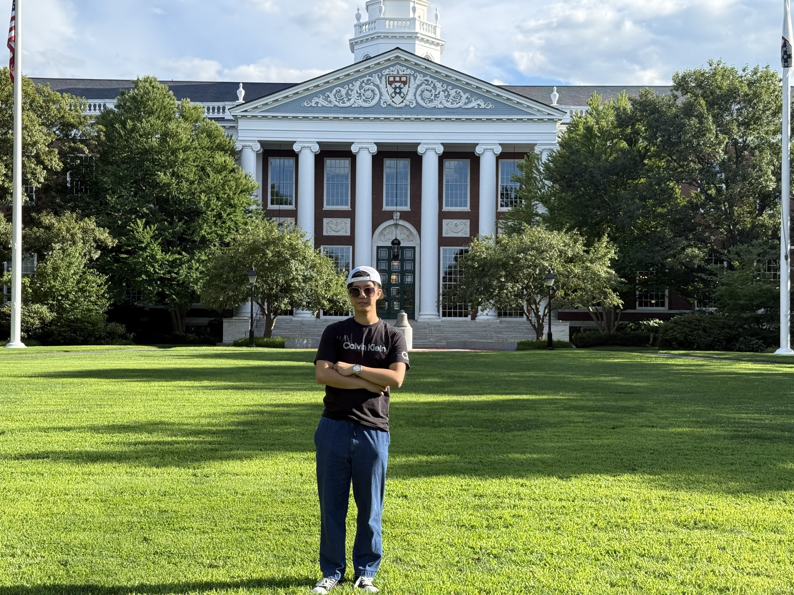

-
Optimizing BMS Models to Minimize Heat Generation and Energy Loss for Enhanced Overall System Efficiency
24th Hawaii International Conference on Education · Honolulu, USA · Jan 8–11, 2026
-
Visualization and Simulation Analysis of Battery Management System Based on Thermodynamic Models
WEI International Academic Conference · Harvard Faculty Club · Boston, USA · July 22–24, 2025
-
Enhancing the Understanding of Vector Calculus in Engineering Education Using Matplotlib for Visualization and Problem Solving
23rd Hawaii International Conference on Education · Honolulu, USA · Jan 4–7, 2025

Hello! 👋
Engineering student · Research-driven portfolio
CHUN-LIN LIAO
B.S. in Mechatronics Engineering · National Taiwan Normal University (NTNU)
Motivated engineering student with a foundation in Artificial Intelligence, control, and system optimization. Skilled in Python, MATLAB/Simulink, and C for intelligent modeling and simulation. Currently conducting research on AI-driven optimization for Battery Management Systems and Smart IoT firmware, with multiple international conference presentations in Honolulu and at the Harvard Faculty Club.
Technical Skills & Languages
Tools and skills that support my engineering work
Software & Simulation
Modeling, programming, and system analysis
CAD & Mechanical
Design and manufacturing exposure
Languages & Academic English
Communication for global collaboration
Professional Development
Workshops & training
Python MATLAB / Simulink C Programming SolidWorks Taguchi DOE AI & Optimization Smart IoT
Research & Presentations
AI, BMS, and engineering education
Projects & Academic Experiences
Turning ideas into models, tools, and simulations
AI & BMS Optimization
Hybrid Taguchi–GA–Deep Learning Expert System
Smart IoT & Firmware
Signal Processing Laboratory · Smart IoT Systems
System Dynamics
Low-Pass Filter Simulation in MATLAB
Mechanical Design
SolidWorks Mechanical Pencil Sharpener
Industry & Cross-domain Exposure
Semiconductor & Medical AI Applications
Battery Systems · Training
MathWorks Battery System Webinar
Extracurricular & Leadership
Creativity, teamwork, and discipline beyond coursework
Music Production & Programming
Independent Learning (Feb 2022 – Present)
Student Leadership
Hot Music Club · President & Keyboardist
Sports & Discipline
Table Tennis Team (Nov 2020 – June 2023)
Certifications
Selected Credentials
Contact
Let’s talk about research, projects, or opportunities
If you would like to discuss research collaboration, graduate opportunities, or academic projects, feel free to reach out:
Email: chunlin.liao.global@gmail.com
LinkedIn: linkedin.com/in/chun-lin-liao-755b65386
I am especially interested in topics related to:
- • Battery Management Systems and energy-efficient control
- • Smart IoT, sensing, and embedded firmware
- • AI / ML for predictive maintenance and engineering education